10. Computing approximate SSE payoffs¶
Now we are ready to describe the computation of the approximate SSE payoff correspondence. The basic idea is from [JYC2003] who use linear program (LP) formulations as the approximation. Our extension illustrates that when we have probability distributions (with finite support) as state variables, the approximate SSE payoff correspondence can be constructed via bilinear program (BLP) formulations.
Notation:
Let

Given:
- a vector of agent actions
 ,
, - a government policy vector
 , and
, and - a vector of continuation payoffs
 ,
,
the vector of agents’ expected payoffs is defined by
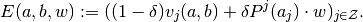
- a vector of agent actions
10.1. Outer Approximation: Conceptual¶
We can now define the outer approximation 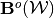.
For each search subgradient
 and each partition element
and each partition element  , let
, let(1)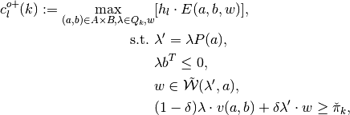
- Then define

Note
Since  is a finite set of action profiles, we can evaluate the program (1) as a special class of a nonlinear optimization problem–a nonseparable bilinear program (BLP)–for each fixed
is a finite set of action profiles, we can evaluate the program (1) as a special class of a nonlinear optimization problem–a nonseparable bilinear program (BLP)–for each fixed  . Then we can maximize over the set , by table look-up.
. Then we can maximize over the set , by table look-up.
10.2. Outer Approximation: Implementation¶
Now we deal with implementing the idea in Outer Approximation: Conceptual. The outer-approximation scheme to construct 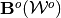 in the set of problems in (1) is computable by following the pseudocode below:
Pseudocode
Input: 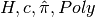
For each:
Markov map
Simplex 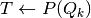
Get Hit-and-Run uniform draws constrained to be in
Get feasible set 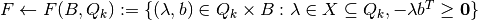
Get 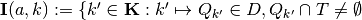 }
- Uses: TriIndex from Simplex_IntersectPmap
For each:
Get relevant feasible policy set 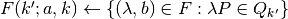
For each 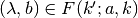:
- Get current payoff profile
- Solve conditional LP:
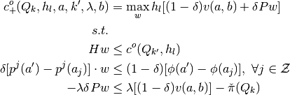
Get
.
Get
.


- Get 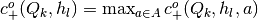.
Note
- In the pseudocode, we can see that for every fixed 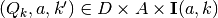 and every feasible , the nested family of programming problems are nonseparable bilinear programs (BLP) in the variables
 .
. - The inner most loop thus implements our Monte Carlo approach to approximately
solve for an
 -global solution to the nonseparable BLPs.
-global solution to the nonseparable BLPs. - Conditional on each draw of
 , this becomes a standard
linear program (LP) in within each innermost loop of the pseudocode.
, this becomes a standard
linear program (LP) in within each innermost loop of the pseudocode. - Given the set of subgradients
 , an outer-approximation update on the initial step
correspondence
, an outer-approximation update on the initial step
correspondence  , is now sufficiently summarized by
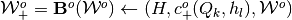.
, is now sufficiently summarized by
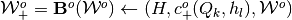.
Relevant functions
-
Admit_Outer_LPset(self)¶ Returns:
Cnew :
- A
 numeric array containing elements
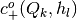 where
numeric array containing elements
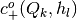 where  and
and  are, respectively, a partition element of the correspondence
domain
are, respectively, a partition element of the correspondence
domain  , and, search subgradient in direction indexed
by 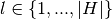.
, and, search subgradient in direction indexed
by 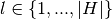.
- A
See also
Punish_Outer
10.3. Inner Approximation: Conceptual¶
We now define the inner approximation of the SSE value correspondence operator as 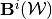 below.
- Denote
 as a finite set of 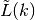 spherical codes (to be used as approximation subgradients, where each
element is 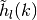 and 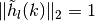 for all
as a finite set of 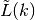 spherical codes (to be used as approximation subgradients, where each
element is 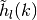 and 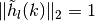 for all
 and .
and . - Assume an initial inner step-correspondence approximation of some convex-valued and compact-graph correspondence
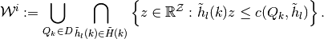
Define another finite set of fixed
 search subgradients, made up also of
spherical codes, , just as in the outer approximation method above. [1]
search subgradients, made up also of
spherical codes, , just as in the outer approximation method above. [1]For each search subgradient
and each partition element
, let(2)
![V^{i+}_l(k):=\min_{\lambda\in Q_k} \max_{(a,b) \in A \times B, w}& [h_l \cdot E(a,b,w)],
\\
\text{s.t.}\,\,&\lambda'=\lambda P(a),
\\
& \lambda b^T \leq 0,
\\
& w\in \tilde{\mathcal{W}^i}(\lambda',a),
\\
& (1-\delta)\lambda \cdot v(a,b)+\delta \lambda' \cdot w\geq \hat{\pi}_k,](_images/math/fa145bbb02432b8afe081cf7997990de8781dffe.png)
Set
 if the optimizer set is empty.
if the optimizer set is empty.In contrast to Outer Approximation: Conceptual, obtain the following additional step.
- Let
 denote the maximizers in direction 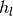 and over domain partition element , that induce the level 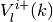 above.
denote the maximizers in direction 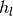 and over domain partition element , that induce the level 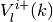 above. - Then the corresponding vector of agent payoffs is

- Define the set of vertices
 and let 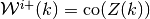.
and let 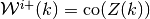.
- Let
Update

and find approximation subgradients
 and constants 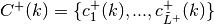 such that
and constants 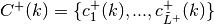 such that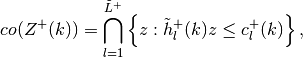
and
 .
.
Note
As in the outer approximation methods, since is a
finite set of action profiles, we can evaluate the program (2)
as a special class of a nonlinear optimization problem–a nonseparable
bilinear program (BLP)–for each fixed . Then
we can maximize over the set , by table look-up. Thus,
the only difference computationally in the inner approximation method is
the extra step of summarizing each inner step-correspondence 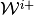 by
updates on:
- approximation subgradients in each 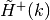;
- levels in each
; and
- vertices,
,
for every .
Footnotes
| [1] | Note that we have to let the approximation subgradients  to possibly vary with domain partition elements , as opposed to fixed search subgradients in used in the optimization step. This is because the former is endogenously determined by the extra convex hull operation taken to construct an inner step-correpondence 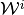 at each successive evaluation of the operator to possibly vary with domain partition elements , as opposed to fixed search subgradients in used in the optimization step. This is because the former is endogenously determined by the extra convex hull operation taken to construct an inner step-correpondence 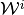 at each successive evaluation of the operator  . . |
Relevant functions
-
Admit_Inner_LPset(self)¶ Returns:
Znew :
- A numeric array containing elements
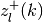 where and 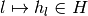 are, respectively, a partition element of the correspondence
domain , and, approximation subgradient in direction indexed
by
 .
.
- A
See also
Punish_Inner
| [JYC2003] | Judd, Kenneth L., Sevin Yeltekin and James Conklin (2003): “Computing Supergame Equilibria”. Econometrica, 71(4), 1239-1254. |
| [SY2000] | Sleet, Christopher and Sevin Yeltekin (2000): “On the Computation of Value Correspondences”. Unpublished. KGMS-MEDS, Northwestern University. |